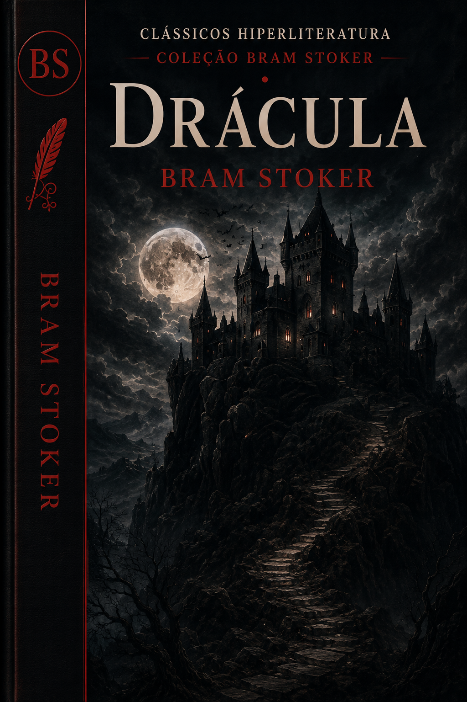
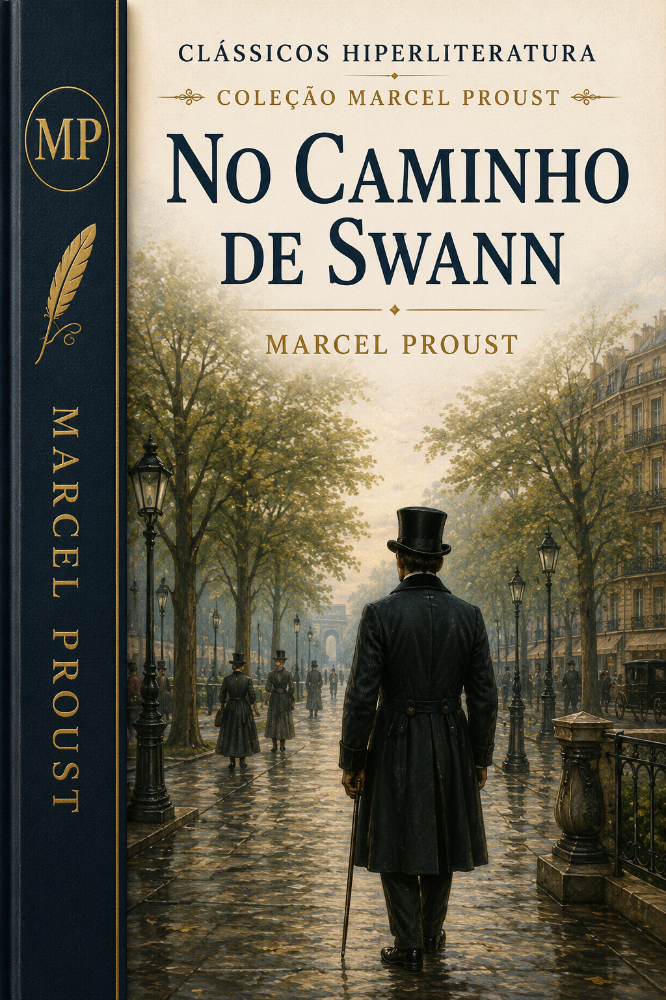
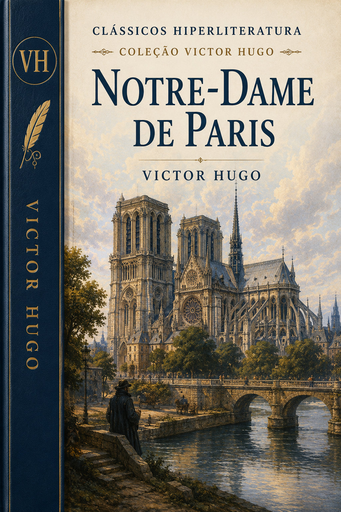
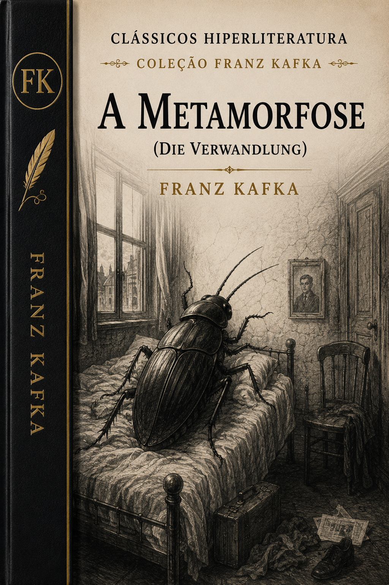
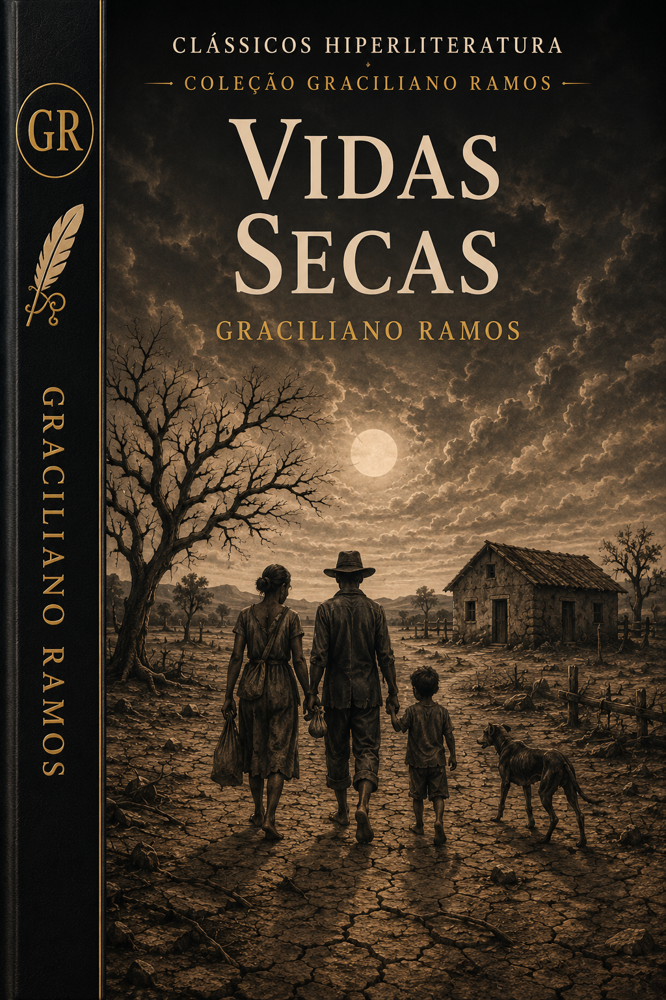
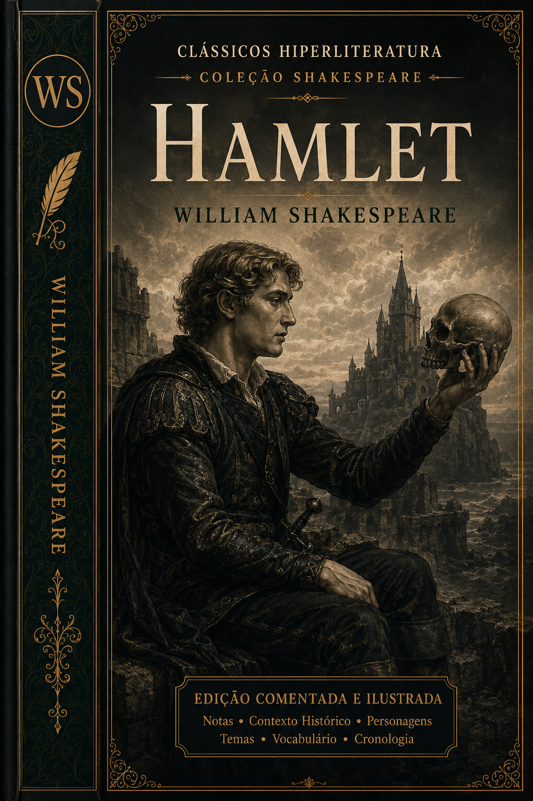
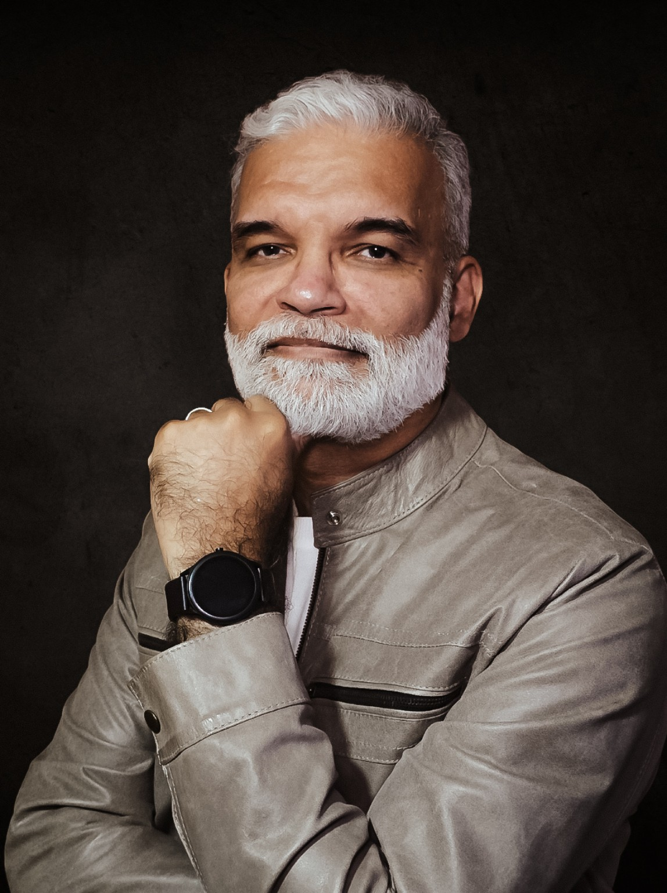

01
Curadoria criteriosa
Seleção de obras fundamentais, raras, esquecidas ou pouco acessíveis ao público brasileiro.
Centenas de clássicos da literatura brasileira e mundial em edições modernas, elegantes, comentadas e ilustradas — muitos deles inéditos no Brasil.



A Hiperliteratura trata cada livro como um universo: texto, contexto, história, imagens, mapas, notas e caminhos de leitura reunidos em uma experiência editorial mais rica.
A coleção une rigor editorial, curadoria intelectual e design digital para aproximar grandes livros dos leitores contemporâneos.
Seleção de obras fundamentais, raras, esquecidas ou pouco acessíveis ao público brasileiro.
Tipografia, navegação e estrutura pensadas para uma leitura digital confortável e sofisticada.
Apresentações, cronologias e materiais de apoio que situam cada obra em seu tempo.
Notas, glossários e recursos editoriais que ajudam o leitor a atravessar obras complexas.
Clássicos brasileiros, portugueses, europeus, góticos, científicos, ensaísticos e narrativos.
Recuperação de títulos ainda ausentes ou pouco disponíveis no mercado editorial brasileiro contemporâneo.
Uma identidade visual premium para valorizar cada obra e criar reconhecimento imediato da marca Hiperliteratura.




Editor, pesquisador, escritor e curador da coleção Hiperliteratura.
A curadoria da Hiperliteratura é conduzida por C.S. Soares, editor da Obliq Livros e pesquisador dedicado à recuperação, anotação e difusão dos clássicos.
Com experiência em edição, tecnologia, gestão da informação e pesquisa literária, C.S. Soares orienta a seleção das obras, a preparação dos textos, a construção dos aparatos críticos e o desenvolvimento das experiências de leitura que caracterizam a coleção.
Serão centenas de obras publicadas progressivamente, formando uma biblioteca digital ampla, confiável e duradoura.
Machado, Alencar, Lima Barreto, Aluísio Azevedo, Júlia Lopes, Graciliano e muitos outros.
Obras fundamentais da tradição europeia e mundial em edições digitais modernas.
Títulos esquecidos, pouco acessíveis ou fora de circulação no Brasil.
Autores e obras ainda não incorporados ao repertório editorial brasileiro contemporâneo.
Para leitores, estudantes, professores, clubes de leitura e todos que desejam compreender melhor os grandes livros.
Para quem quer descobrir ou reler clássicos com mais prazer, clareza e profundidade.
Materiais organizados para apoiar aulas, projetos de leitura e formação literária.
Uma base editorial confiável para debates, estudos e percursos de leitura.
Receba novidades sobre lançamentos, obras raras, bastidores da curadoria e ofertas especiais da coleção Hiperliteratura.
É uma coleção editorial da Obliq Livros dedicada a transformar clássicos em experiências de leitura expandidas, com curadoria, contexto, design digital e recursos complementares.
A proposta principal da Hiperliteratura é digital, mas alguns títulos e materiais poderão futuramente ganhar outros formatos editoriais.
Não. A coleção reunirá clássicos brasileiros e mundiais, incluindo literatura portuguesa, europeia, gótica, científica, ensaística e obras raras.
Sim. Uma das ambições do projeto é recuperar títulos raros, pouco acessíveis e muitos inéditos no mercado editorial brasileiro contemporâneo.